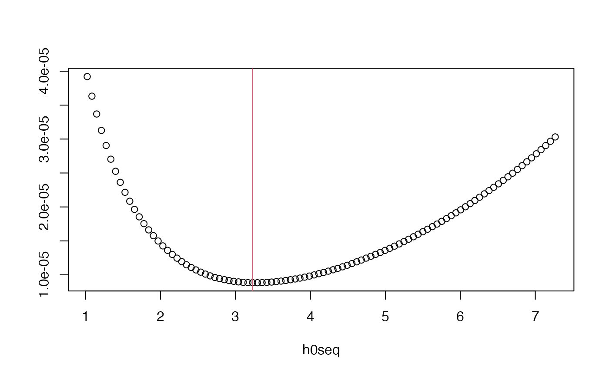

BOOT.density.RdIsotropic fixed or global (for adaptive) bandwidth selection for a standalone 2D density based on bootstrap estimation of the MISE.
BOOT.density(pp, hlim = NULL, eta = NULL, type = c("fixed", "adaptive"), hp = NULL, edge = c("uniform", "none"), ref.density = NULL, resolution = 64, rmdiag = TRUE, sim.adapt = list(N = 50, B = 100, dimz = 64, objective = FALSE), parallelise = NA, verbose = TRUE, ...)
| pp | An object of class |
|---|---|
| hlim | An optional vector of length 2 giving the limits of the optimisation routine with respect to the bandwidth. If |
| eta | Fixed scalar bandwidth to use for the reference density estimate; if |
| type | A character string indicating selection type. Either |
| hp | Pilot bandwidth used for adaptive estimates in the bootstrap; see the argument of the same tag in |
| edge | Character string dictating edge correction for the bootstrapped estimates. |
| ref.density | Optional. An object of class |
| resolution | Spatial grid size; the optimisation will be based on a [ |
| rmdiag | Logical control value for removal of mirrored evaluation points as suggested by Taylor (1989) in the theoretical expression of the fixed-bandwidth MISE estimate. See `Details'. Ignored when |
| sim.adapt | List of control values for bootstrap simulation in the adaptive case; see `Details'. Ignored when |
| parallelise | Optional numeric argument to reduce computation time by invoking parallel processing, by giving the number of CPU cores to use in either evaluation (fixed) or in the actual bootstrap replicate generation (adaptive). Experimental. Test your system first using |
| verbose | Logical value indicating whether to print function progress during execution. |
| … | Optional arguments controlling scaling to be passed to |
For a 2D kernel density estimate \(\hat{f}\) defined on \(W \in R^2\), the mean integrated squared error (MISE) is given by \(E[\int_W (\hat{f}(x) - f(x))^2 dx]\), where \(f\) is the corresponding true density. Given an observed data set \(X\) (argument pp) of \(n\) observations, this function finds the bandwidth \(h\) that minimises
$$E^*[\int_W (\hat{f}^*(x) - \hat{f}(x))^2 dx],$$
where \(\hat{f}(x)\) is a density estimate of \(X\) constructed with `reference' bandwidth \(\eta\) (argument eta or ref.density), and \(\hat{f}^*(x)\) is a density estimate using bandwidth \(h\) of \(n\) observations \(X^*\) generated from \(\hat{f}(x)\). The notation \(E^*\) denotes expectation with respect to the distribution of the \(X^*\).
When type = "fixed", the function assumes you want to select a constant bandwidth for use with the fixed-bandwith density estimator. This implementation is based on extending the remarkable results of Taylor (1989) (see also Sain et al., 1994), who demonstrates that when the Gaussian kernel is being used, we can find the optimal \(h\) with respect to the aforementioned bootstrap-estimated MISE without any actual resampling. This implementation extends these results to the bivariate setting, and allows for edge-correction of both the reference and bootstrap densities.
Taylor (1989) does not distinguish between the reference bandwidth \(\eta\) and the target of optimisation, \(h\), thus allowing the reference bandwidth to vary alongside the target in the optimisation. This is not optimal, and this function always assumes a static reference bandwidth. Hall et al. (1992) indicate that a generous amount of smoothing is to be preferred in the reference density (hence the default eta set using OS).
If ref.density is supplied, it must be a fixed-bandwidth density estimate as an object of class bivden for validity of the theory. Edge-correction must be present if edge = "uniform"; and it must be evaluated on the same spatial domain as dictated by Window(pp) and resolution. If unsupplied, the function internally computes an appropriate fixed-bandwidth density estimate using eta as the reference bandwidth.
Finally, Taylor (1989) argues it is preferable to avoid summation at identical evaluation grid points in the expression for the optimal bandwidth, which is performed when rmdiag = TRUE. Setting rmdiag = FALSE disables this correction.
When type = "adaptive", the function assumes you want to select a global bandwidth (argument h0 in bivariate.density) for use in 2D adaptive kernel density estimation.
An expression similar to Taylor (1989) is not possible for the adaptive estimator. Thus, in the adaptive setting, the optimal bootstrap bandwidth is calculated by brute force as was performed in Davies and Baddeley (2018) by taking advantage of the multiscale estimation theory implemented in multiscale.density. The value that minimises an interpolating cubic spline of the estimated MISE on bandwidth is identified as the optimal global bandwidth.
The user can pass either a fixed or adaptive bivden object to ref.density. If this is the case, hp is ignored and the pilot bandwidth for each iteration of the bootstrap in estimation of the \(\hat{f}^*(x)\) uses ref.density$hp (if ref.density is adaptive) or ref.density$h0 (if ref.density is fixed). When ref.density is unsupplied, the function uses a fixed-bandwidth kernel estimate with bandwidth eta as the reference density, and if additionally hp is unsupplied, the same value eta is used for the constant pilot bandwidth.
Control over the bootstrap is achieved with four optional named arguments passed as a list to sim.adapt. N controls the number of bootstrap iterates per bandwidth; B controls the resolution of the sequence of bandwidths trialled (i.e. between hlim[1] and hlim[2]); dimz specifies the resolution of the bandwidth axis in the trivariate convolution evaluated by multiscale.density; and objective specifies whether to return the set of estimated MISEs for all bandwidths (nice to plot), or merely the optimal bandwidth (see `Value').
The … are intended for any relevant optional arguments to be passed to the internal call to multiscale.density, such as gamma.scale or trim.
The optimal fixed or global (for adaptive) scalar bandwidth. If simargs$objective = TRUE for the adaptive bootstrap, the return object is instead a \([\)simargs$B \(x 2]\) matrix, with the first column giving the trialled bandwidth and the second giving the corresponding value of the estimated bootstrap MISE.
Davies, T.M. and Baddeley A. (2018), Fast computation of spatially adaptive kernel estimates, Statistics and Computing, [to appear].
Hall, P., Marron, J.S. and Park, B.U. (1992) Smoothed cross-validation, Probability Theory and Related Fields, 92, 1-20.
Sain, S.R., Baggerly, K.A. and Scott, D.W. (1994) Cross-validation of multivariate densities, Journal of the American Statistical Association, 89, 807-817.
Taylor, C.C. (1989) Bootstrap choice of the smoothing parameter in kernel density estimation, Biometrika, 76, 705-712.
Even with the implemented computational tricks, bootstrapping for bandwidth selection for spatial data is still computationally demanding, especially for adaptive kernel estimates. The user can reduce this time by keeping the evaluation grid at modest resolutions, and experimenting with parallelising the internal loops via parallelise. The `Examples' section offers some rough indications of evaluation times on this author's local machine.
data(pbc) ## Fixed bandwidth selection ## BOOT.density(pbc) # ~20 secs#> Initialising...Done. #> Searching for optimal h in [0.0999999999999091, 15.2778333333333]...Done.#> [1] 1.777469#> Initialising...Done. #> Searching for optimal h in [0.0999999999999091, 15.2778333333333]...Done.#> [1] 1.232007#> Initialising...Done. #> Searching for optimal h in [0.0999999999999091, 15.2778333333333]...Done.#> [1] 1.93594# supplying pre-defined reference density as fixed-bandwidth 'bivden' object pbcfix <- bivariate.density(pbc,h0=2.5,resolution=64) system.time(hfix <- BOOT.density(pbc,ref.density=pbcfix,parallelise=4)) # parallelisation; 14 secs#> Initialising...Done. #> Searching for optimal h in [0.0999999999999091, 15.2778333333333]...Done.#> user system elapsed #> 26.814 8.244 14.967hfix#> [1] 1.641965## Global (for adaptive) bandwidth selection ## # ~200 secs next line; use 'parallelise' for speedup system.time(hada <- BOOT.density(pbc,type="adaptive")) # minimal usage for adaptive bootstrap#> Initialising...Done. #> Searching for optimal h0 in [0.0999999999999091, 15.2778333333333]: #> ================================================================================#> user system elapsed #> 175.327 10.341 185.861hada#> [1] 2.72801# ~80 secs next line. Set custom h limits; increase reference bandwidth; # set custom pilot bandwidth; return objective function system.time(hada <- BOOT.density(pbc,hlim=c(0.9,8),eta=3.5,type="adaptive", hp=OS(pbc)/2,parallelise=6, sim.adapt=list(objective=TRUE)))#> Initialising...Done. #> Searching for optimal h0 in [0.9, 8]: #> --bootstrapping on 6 / 8 cores-- #> Done.#> user system elapsed #> 345.176 14.568 76.518hada[which.min(hada[,2]),1]#> h0seq #> 3.23166plot(hada);abline(v=hada[which.min(hada[,2]),1],col=2)